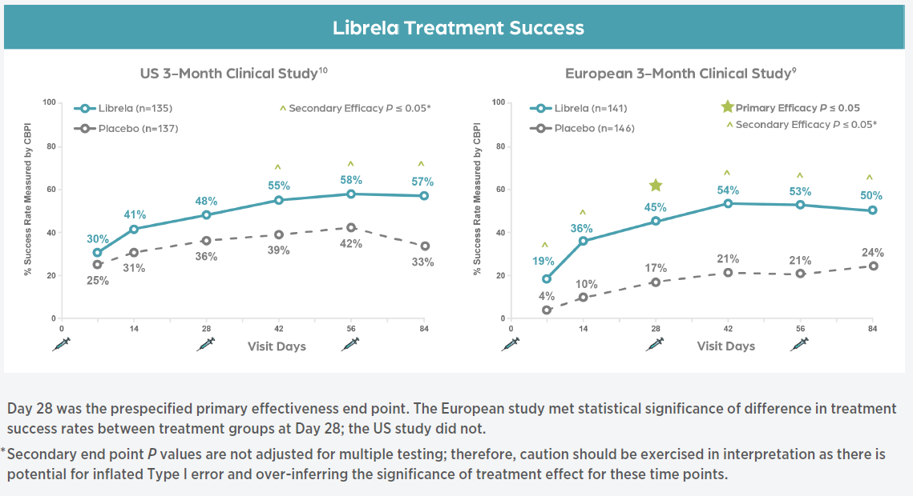
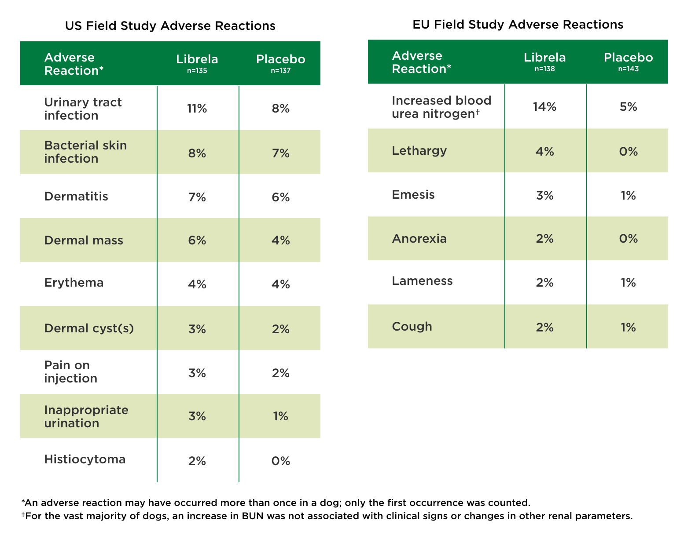
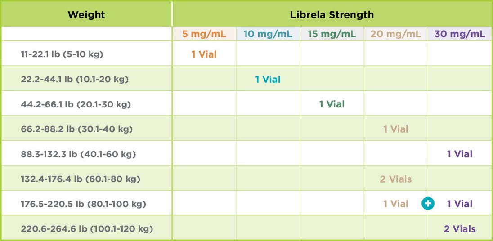

monoclonal antibody injectable therapy administered monthly to control canine osteoarthritis pain in dogs. It is indicated for the control of pain associated with osteoarthritis in dogs.
Canine
Bedivetmab
Injection
5mg, 10mg, 15mg
2 vial/box
Librela is a once-monthly injectable monoclonal antibody therapy that is a potent inhibitor of canine NGF activity, a key OA pain mediator, which helps reduce canine OA pain.
Librela targets canine OA pain with a unique mechanism of action.
As Librela binds to NGF, its action helps to:
Librela is a monoclonal antibody (mAb).
In 2 clinical studies conducted in the US and EU with a total of 559 dogs, Librela was shown to reduce canine OA pain, which can improve overall quality of life.

Both studies used the Canine Brief Pain Inventory (CBPI), an owner-completed questionnaire designed to quantify the severity of OA pain and the impact of that pain on the activity of dogs. The CBPI is a clinically validated measurement that assesses pain severity, pain interference (activity), and overall quality of life.
The percentage of dogs considered treatment successes based on the owner CBPI assessment was greater in the Librela group compared to the control group for all assessments in both studies. While effectiveness may not be seen until after the second dose of Librela, some dogs may experience a reduction in pain as early as 7 days after the first dose.
Librela was approved as safe and effective when used according to labeling and provided continuous OA pain control when administered monthly.
Librela Is Approved as Safe and Effective When Used According to Labeling.

Librela is eliminated via normal protein degradation pathways—just like naturally produced antibodies—with minimal metabolism by the liver or kidneys.
Adverse events reported to Zoetis are reviewed by a team of pharmacovigilance experts overseen by veterinarians. All reports are provided to the appropriate regulatory authority, as required, such as the FDA Center for Veterinary Medicine in the US and the European Medicines Agency in the EU. Based on continuous monitoring and evaluation of the global pharmacovigilance data, no individual adverse event sign has been reported at a rate higher than rare, as defined by the European Medicines Agency (EMA) as
The following adverse events are based on post-approval adverse drug experience reporting for Librela. Not all adverse events are reported to FDA/CVM. It is not always possible to reliably estimate the adverse event frequency or establish a causal relationship to product exposure using these data.
The following adverse events in dogs are categorized in order of decreasing reporting frequency by body system and in decreasing order of reporting frequency within each body system:
In some cases, death (including euthanasia) has been reported as an outcomes of the adverse events listed above.
The recommended dose of Librela is 0.23 mg/lb (0.5 mg/kg) body weight, once a month.
>
For dogs ≥11 lb (≥5 kg): Dogs should be dosed by weight range according to the table shown above. Dogs are given the full content of 1 or 2 vials of the appropriate concentration based on body weight. Aseptically withdraw the total dose into a single syringe and administer immediately.
See full Prescribing Information. Librela is for use in dogs only. Women who are pregnant, trying to conceive or breastfeeding should take extreme care to avoid self-injection. Hypersensitivity reactions, including anaphylaxis, could potentially occur with self-injection. Librela should not be used in breeding, pregnant, or lactating dogs. Librela should not be administered to dogs with known hypersensitivity to bedinvetmab. Adverse events reported post-approval include ataxia (lack of balance/coordination), anorexia (loss of appetite), lethargy (tiredness), emesis (vomiting), and polydipsia (increased drinking). The most common adverse events reported in a clinical study were urinary tract infections, bacterial skin infections and dermatitis (skin irritation/inflammation).
See the Client Information Sheet for more information about Librela.